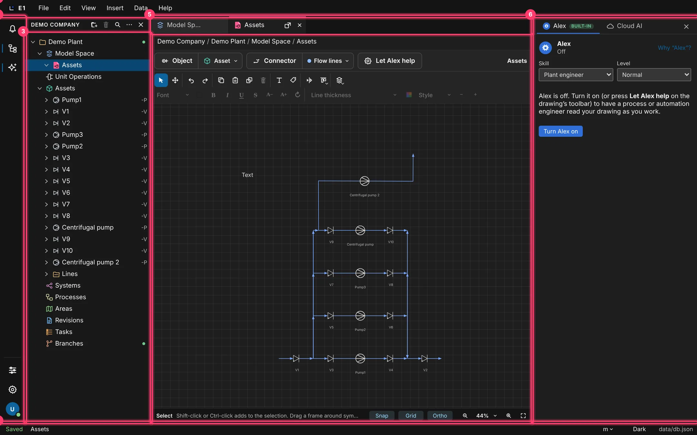
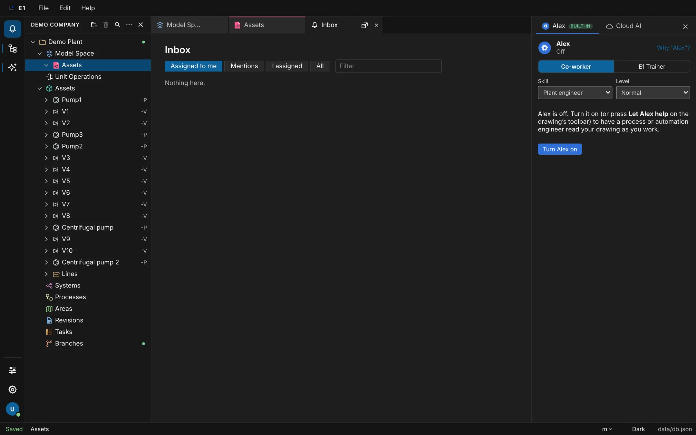
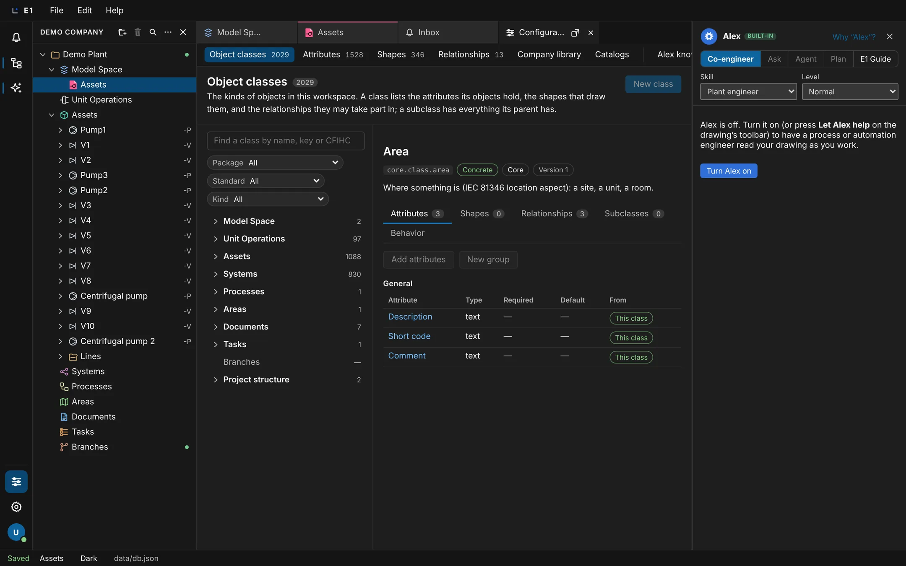
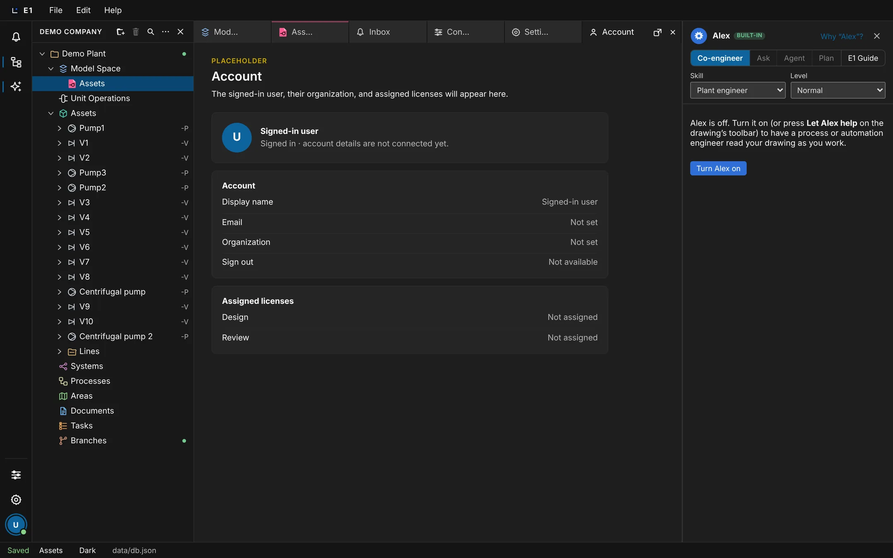
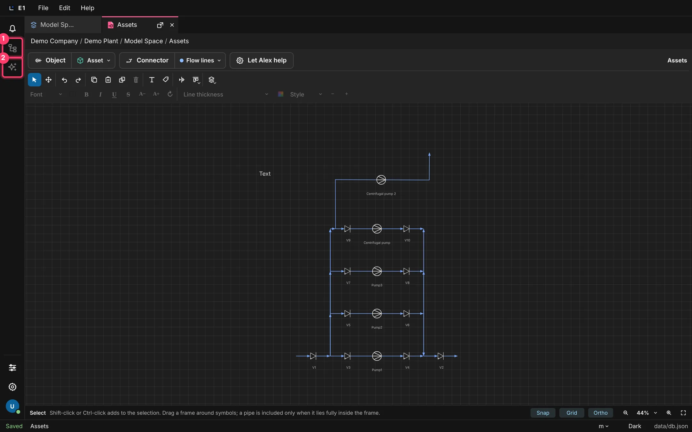
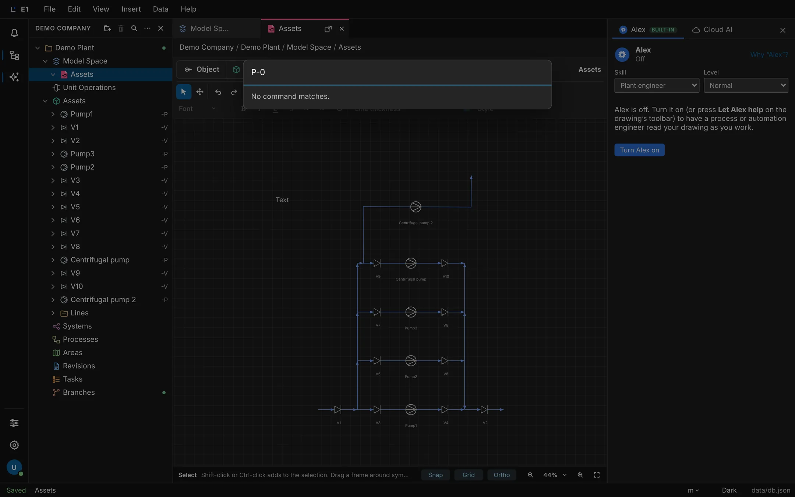
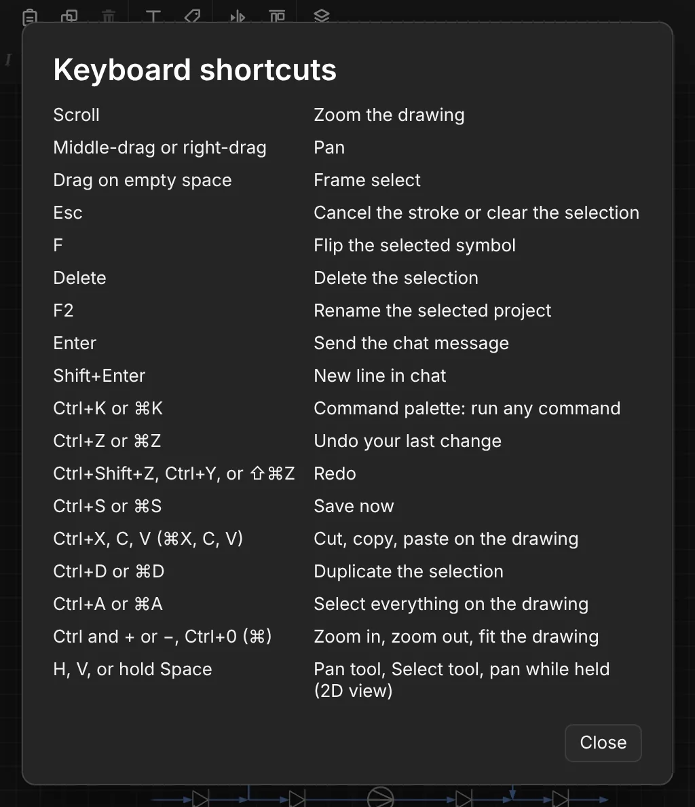
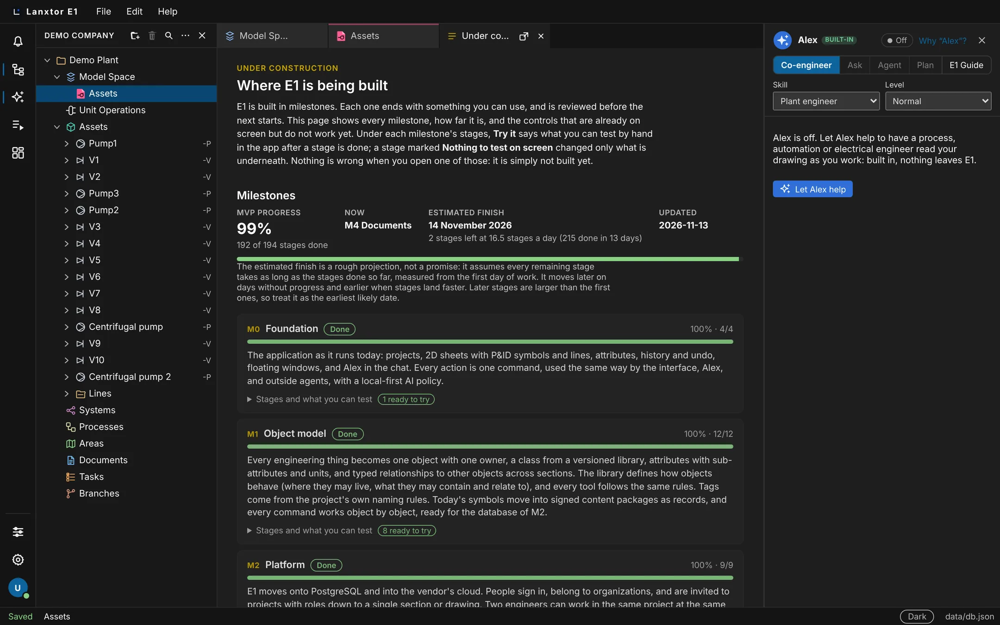

Academy / User guide / Getting started
1. Getting started
The E1 window: menus, the left rail, the explorer, tabs, the side panel, the status bar, the command palette, keyboard shortcuts, your settings and Help.
About this guide
This guide shows you around the E1 window: the menus, the left rail and its places, the explorer, the tabs, the side panel, the status bar, the command palette, the keyboard shortcuts, your own settings and Help. Read it first. The other guides assume you know where these things are.
The usual order
- Learn the window layout and the left rail.
- Look through the menus: File, Edit, View, Insert, Data and Help.
- Work with tabs and the path bar, floating windows and hiding and showing panels.
- Read the status bar and choose your appearance.
- Run any command from the command palette and learn the keyboard shortcuts.
- Open the places (Inbox, Configuration, Settings, Account) and set your Settings.
- See what is still being built in Under construction.
Before you start
E1 is open in the browser or the desktop app, and you are signed in where your installation asks for it. See Sign in to E1. The pictures in this guide show the demo project Demo Plant of the organization Demo Company in the dark appearance.
The E1 window
The E1 window has seven parts: the menu bar, the left rail, the explorer, the tab strip, the editor area, the Alex and Cloud AI side panel, and the status bar. Everything you do starts in one of them.
- Where
- The whole window, as soon as E1 has opened
- Who
- Everyone who can open E1
- Before you start
- E1 is open and you are signed in where your installation asks for it.
The parts of the window
- Menu bar. The E1 logo and the word E1, then the menus File, Edit, View, Insert, Data and Help.
- Left rail. Icons only: the Inbox bell, the Explorer and Alex and Cloud AI switches, Configuration, Settings and your account.
- Explorer. The tree of your projects. Its header shows the name of your organization and the explorer's buttons.
- Tab strip. One tab for each open sheet, list, object, place or page.
- Editor area. The path bar and the content of the active tab, for example a drawing with its toolbar.
- Side panel. The tabs Alex and Cloud AI.
- Status bar. Whether your changes are saved, what is selected, the units, the appearance and the store E1 runs on.
You can drag the splitters between the explorer and the editor, and between the editor and the side panel, to change their widths. The explorer is 180 to 480 pixels wide (260 at first), the side panel 280 to 560 pixels (340 at first). E1 keeps these widths in this browser.
Steps
| # | Action | Expected result |
|---|---|---|
| 1 | Open E1. | The status bar shows Saved, the menu bar reads E1, and the explorer tree is visible. |
| 2 | Look at the explorer header. | It shows a button named after your organization (here Demo Company). There is no Workspace row in the tree. |
| 3 | Close every tab with its ×. | The editor shows No tab open and "Select a project or section in the explorer to open it here." |
| 4 | Drag the splitter to the right of the explorer to the right. | The explorer gets wider, up to its limit. After a reload it keeps its width. |


Review check A1 is out of date. It expects a Workspace row and a Lines section in the explorer. Since 2026-11-07 the explorer header names the organization and there is no Workspace row; Lines is a group under Assets, not a section.
The Edit menu
The Edit menu undoes and redoes your changes and cuts, copies, pastes, duplicates, deletes and selects on the drawing.
- Where
- Menu bar → Edit
- Who
- Anyone who may edit the project
- Before you start
- A sheet is open, or something is selected in the explorer.
Items
| Item | Shortcut | What it does |
|---|---|---|
| Undo | Ctrl+Z (⌘Z) | Undoes your last change. Each person has their own undo. |
| Redo | Ctrl+Shift+Z or Ctrl+Y (⇧⌘Z) | Does the undone change again. |
| Cut, Copy, Paste | Ctrl+X, Ctrl+C, Ctrl+V (⌘X, ⌘C, ⌘V) | On the drawing. |
| Duplicate | Ctrl+D (⌘D) | Copies the selection on the drawing. |
| Delete | Delete | Deletes the selection in the pane you used last: the explorer or the drawing. |
| Select all | Ctrl+A (⌘A) | Selects everything on the drawing. |
Steps
| # | Action | Expected result |
|---|---|---|
| 1 | Click Edit. | The menu opens with the items above, with dividers after Redo and after Delete. |
| 2 | Move a symbol on the open sheet, then choose Edit → Undo. | The symbol goes back to where it was. |
| 3 | Choose Edit → Redo. | The symbol moves again. |
| 4 | Click a text field (for example the explorer search) and press Ctrl+Z (⌘Z). | Only the text in the field changes; the project is not undone. |

The keys do nothing while you type in a text field, except Ctrl+S. Cut, copy, paste, duplicate and select all work when the drawing was the pane you used last.
The left rail
The narrow strip of icons on the far left opens the places of E1 (Inbox, Configuration, Settings, Account) and shows or hides the explorer and the Alex and Cloud AI panel.
- Where
- The left edge of the window
- Who
- Everyone
- Before you start
- E1 is open.
The icons, from top to bottom
| Icon (name on hover) | What it does |
|---|---|
| Bell, Inbox | Opens the Inbox tab. A badge shows how many items are unread (at most "99+"). |
| Tree, Hide Explorer / Show Explorer | Hides or shows the explorer. It is highlighted while the explorer is shown. |
| Sparkle, Hide Alex and Cloud AI / Show Alex and Cloud AI | Hides or shows the side panel. |
| Configuration | Opens the Configuration tab: the shared data model, library, catalogs and project settings. |
| Gear, Settings | Opens your own Settings. |
| Your initial or picture, Signed-in user | Opens the Account tab. |
Steps
| # | Action | Expected result |
|---|---|---|
| 1 | Click the bell. | An Inbox tab opens and is selected; the bell is highlighted. |
| 2 | Click Configuration, then the gear, then your initial. | Each opens its tab (Configuration, Settings, Account) and becomes the highlighted icon. |
| 3 | Look for Messages and History on the rail. | They are not there. Open them from the command palette with Open place. |

The places: Inbox, Configuration, Settings and Account
A place is a page that is not part of one project. Each opens as its own tab from the left rail. The Inbox collects what is addressed to you, Configuration holds the settings you share with your organization, Settings holds your own preferences, and Account shows who you are and what you may do.
- Where
- Left rail; or the command palette → Open place
- Who
- Everyone. The Inbox and the Account details need a server with sign-in.
- Before you start
- E1 is open.
What each place shows
- Inbox (bell): with sign-in, the real Inbox with the heading Inbox: mentions, replies and tasks. Without sign-in it shows two example notifications ("A drawing was shared with you", "A review was requested").
- Configuration: object classes, attributes, shapes, relationships, the company library, catalogs and the project settings. See the library guide.
- Settings (gear): your own preferences. See Your settings.
- Account (your initial): with sign-in, the heading Account, your profile, Your access (license, organization role, projects), Passkeys and Session with Sign out. Without sign-in it is a placeholder.
- History and Messages are not on the rail. Open them from the command palette: Open place with the place history or messages.
Steps
| # | Action | Expected result |
|---|---|---|
| 1 | Click the bell on the rail. | The Inbox tab opens. Signed in, it shows your notifications or "Nothing here." |
| 2 | Click Configuration on the rail. | The Configuration tab opens with its list of sections, starting with Object classes. |
| 3 | Click your initial at the bottom of the rail. | The Account tab opens. Signed in: your name, email and organization. Not signed in: the kicker Placeholder and "The signed-in user, their organization, and assigned licenses will appear here." |



Tabs and the path bar
Everything you open (a sheet, an object, a list, a place) gets a tab. Under the tabs the path bar shows where the open item lives, from the organization down. E1 remembers your tabs for you.
- Where
- The tab strip above the editor, and the path bar under it
- Who
- Everyone
- Before you start
- A project is in the explorer.
How tabs work
- Each tab has an icon, a name, Detach (to a floating window) and Close. Hover a tab to see its full path, for example Demo Company / Demo Plant / Model Space / Assets.
- Middle-click a tab to close it. Turn the mouse wheel over the strip to scroll it sideways.
- With many tabs, a button All open tabs (N) appears at the end of the strip. It lists every tab, with a search box Search tabs.
- The path bar shows crumbs separated by /. The first one is the organization. Click a crumb to select that item. Places and Under construction have no path bar.
Steps
| # | Action | Expected result |
|---|---|---|
| 1 | Double-click a sheet in the explorer. | A tab opens with the drawing; the path bar shows the organization, the project, Model Space and the sheet. |
| 2 | Click × (Close) on that tab. | The tab is gone, with its drawing. |
| 3 | Double-click the sheet again. | The tab is back, active, with the drawing. |
| 4 | Double-click ten or more objects under Assets. | The tabs shrink and All open tabs (N) appears at the end of the strip. |
| 5 | Click All open tabs (N), type V5 in Search tabs and press Enter. | The list shows one entry; after Enter the V5 tab is active. |
| 6 | Click the project's crumb in the path bar. | The project is selected in the explorer. |
| 7 | Reload the page. | The same tabs are open and the same tab is active. |
Floating windows
Take a tab out of the main window to see two things side by side, for example a drawing on a second screen. Changes you make in a floating window are saved like any other.
- Where
- A tab's Detach button, or drag a tab out of the tab strip
- Who
- Everyone
- Before you start
- In the browser, allow pop-ups for E1.
Steps
| # | Action | Expected result |
|---|---|---|
| 1 | On the Assets sheet tab, click Detach (the box with an arrow). | A new window opens with the drawing. Its title bar shows the tab's name and an Attach button. |
| 2 | In the floating window, place a pump with Object → Pump → Add to diagram and click on the sheet. | The pump appears in both windows; the main window's status bar shows Saved. |
| 3 | Meanwhile, rename the project in the main window (select it, F2, type, Enter). | Both changes are kept and both windows show them. |
| 4 | Click Attach. | The floating window closes and the tab is back in the main window. |
In the desktop app a floating window is a real window of its own, and E1 opens it again where it was at the next start. When the item in a floating window is deleted, it shows "This tab is closed" and "The item is no longer in the project."
Hide and show the explorer and the side panel
Hide the explorer or the Alex and Cloud AI panel to give the drawing more room, and bring them back from the left rail. E1 remembers what you hid.
- Where
- The × in the explorer header and beside the Alex and Cloud AI tabs; the rail icons; View → Explorer and View → Chat
- Who
- Everyone; it is your own view
- Before you start
- Both panels are shown.
Steps
| # | Action | Expected result |
|---|---|---|
| 1 | Look at the rail. | The Explorer and Alex and Cloud AI icons are both highlighted. |
| 2 | Click × (Hide explorer) in the explorer header. | The explorer is gone; the rail's Explorer icon is no longer highlighted. |
| 3 | Click × (Hide Alex and Cloud AI) beside the Alex and Cloud AI tabs. | The side panel is gone; its rail icon is no longer highlighted. |
| 4 | Reload the page. | Both panels stay hidden. |
| 5 | Click the rail's Explorer icon (Show Explorer). | The explorer is back. |
| 6 | Click the rail's sparkle icon (Show Alex and Cloud AI). | The side panel is back with its Alex tab. |
| 7 | Click the sparkle icon twice more. | The panel hides, then shows again. |

Which panels are shown, and their widths, are kept in this browser only.
The status bar
The strip along the bottom tells you whether your changes are saved, what is selected, what your last edit touched, and which store E1 runs on. It also holds the units and appearance chips.
- Where
- The bottom edge of the window
- Who
- Everyone
- Before you start
- E1 is open.
From left to right
- Save state: Loading, Saving…, Saved, Save failed, Changed elsewhere — reloaded or Change refused. A failure is red, and its reason is shown next to it and on hover.
- Name of the selected item.
- Impact after an edit on the drawing, for example "Connected: P1, T1 and 3 lines". Hover it to see each symbol and line. It stays until your next edit.
- Units chip (m). See Units of measurement.
- Appearance chip Dark or Light.
- Store: where your projects are kept. See Which store E1 runs on.
Steps
| # | Action | Expected result |
|---|---|---|
| 1 | Rename a project. | The save state briefly reads Saving…, then Saved. |
| 2 | Move a pump on the drawing that has lines connected. | The impact reads "Connected: …" with the connected symbols and lines. |
| 3 | As a Reviewer on a project, try to move a symbol. | The save state reads Change refused in red, with the reason, for example "You may not do this here: it needs drawing.edit on …". |

Light and dark appearance
E1 opens in the dark appearance. Switch to light whenever you like; the choice is kept in this browser and changes nothing for anyone else.
- Where
- The status bar chip Dark/Light; View → Light appearance; Settings → Appearance → Theme
- Who
- Everyone
- Before you start
- E1 is open.
Steps
| # | Action | Expected result |
|---|---|---|
| 1 | Click the Dark chip in the status bar (hover text "Switch to light appearance"). | E1 turns light; the chip reads Light. |
| 2 | Click the chip again. | E1 is dark again; the chip reads Dark. |
| 3 | Choose Light in Settings → Theme, then reload. | E1 stays light after the reload. |
The appearance is kept per browser, not per account: on another computer you start in dark again.
The command palette
The command palette runs any E1 command by name and jumps to any object by its tag or name. It is the fastest way to do something when you do not know where its button is.
- Where
- Ctrl+K (⌘K) anywhere, or View → Command palette…
- Who
- Everyone; a command that changes the project needs the right to edit
- Before you start
- E1 is open.
What you see
- A dialog Command palette with a search box "Run a command…" and a list of commands, each with a short description (up to 40). With no match: No command matches.
- From two typed characters, a second list Go to object with entries "Go to tag or name" and the project.
- Choosing a command that needs input opens its form: a ‹ button (back to commands), the command's title, its fields (required ones marked *), and the buttons Close and Run. After running: "Done." or an error in red.
- Keys: ↑/↓ move, Enter chooses, Esc goes back from a form or closes the palette. Ctrl+K again also closes it.
Steps
| # | Action | Expected result |
|---|---|---|
| 1 | Press Ctrl+K (⌘K). | The Command palette dialog opens with the cursor in the search box. |
| 2 | Type new folder and press Enter. | The form opens with the heading New folder. |
| 3 | Type Unit 300 in Name and click Run. | The palette says "Done."; the status bar shows Saved. |
| 4 | Click Close. | The explorer shows a row "Unit 300". |
| 5 | Press Ctrl+K and type the tag of an object, for example V3. | The list Go to object shows "Go to V3"; choosing it opens V3. |
| 6 | Type text that matches nothing. | The palette shows No command matches. |


Useful commands: Open place (with history, notifications, messages, configuration, settings, account or backlog) opens a place, including History and Messages; Project activity shows one project's changes; New project.
Keyboard shortcuts
The Keyboard shortcuts dialog lists the keys and mouse moves of E1. This section lists them too, with a few that the dialog does not show.
- Where
- Help → Keyboard shortcuts
- Who
- Everyone
- Before you start
- E1 is open.
Steps
| # | Action | Expected result |
|---|---|---|
| 1 | Choose Help → Keyboard shortcuts. | The dialog Keyboard shortcuts opens with one row per key and what it does. |
| 2 | Click Close. | The dialog closes. |
The list in the dialog
| Key | What it does |
|---|---|
| Scroll | Zoom the drawing |
| Middle-drag or right-drag | Pan |
| Drag on empty space | Frame select |
| Esc | Cancel the stroke or clear the selection |
| F | Flip the selected symbol |
| Delete | Delete the selection |
| F2 | Rename the selected project |
| Enter | Send the chat message |
| Shift+Enter | New line in chat |
| Ctrl+K (⌘K) | Command palette: run any command |
| Ctrl+Z (⌘Z) | Undo your last change |
| Ctrl+Shift+Z, Ctrl+Y (⇧⌘Z) | Redo |
| Ctrl+S (⌘S) | Save now |
| Ctrl+X, C, V (⌘X, C, V) | Cut, copy, paste on the drawing |
| Ctrl+D (⌘D) | Duplicate the selection |
| Ctrl+A (⌘A) | Select everything on the drawing |
| Ctrl and + or −, Ctrl+0 (⌘) | Zoom in, zoom out, fit the drawing |
| H, V, or hold Space | Pan tool, Select tool, pan while held |
Not in the dialog, but they work
- Ctrl+P (⌘P): print the PDF of the open sheet.
- In the explorer: F2 also renames an object row; Delete or Backspace deletes the selected row; Esc clears several picked projects or closes the search; Enter on a drawing shortcut under an object opens that drawing.

The shortcuts do nothing while you are typing in a text field, except Ctrl+S. Ctrl+N is shown in the File menu but does nothing.
Your settings
Settings holds your own preferences: appearance, how Cloud AI changes your drawings, and which notifications also come by email. Changing them changes nothing for anyone else.
- Where
- Left rail → gear Settings
- Who
- Everyone
- Before you start
- E1 is open. Email notifications need sign-in.
The cards
| Card | Row | Choices |
|---|---|---|
| Appearance | Theme | Dark / Light |
| Appearance | Density | "Not set" (not built yet) |
| Cloud AI | Changes Cloud AI makes | Apply directly / Review first |
| Cloud AI | What is already drawn | Protect the arrangement / May be rearranged |
| Notifications | When someone mentions you in a comment | Email me (default) / In the app only |
| Notifications | When someone replies to your comment | Email me (default) / In the app only |
| Notifications | When someone assigns you a task | Email me (default) / In the app only |
| Notifications | When a task you assigned is done | Email me / In the app only (default) |
| Language and region | Language, Time zone, Date format | "Not set" (not built yet). "Units follow the project." |
| Shared settings | — | Buttons Project settings, Project defaults, Data model: they open Configuration at that section. |
Steps
| # | Action | Expected result |
|---|---|---|
| 1 | Click the gear on the rail. | The Settings tab opens with the heading "Settings", the badge Only you and "Your own preferences. Changing them changes nothing for anyone else." |
| 2 | Set Changes Cloud AI makes to Review first. | The choice is selected. Cloud AI now shows its changes for you to apply or discard. |
| 3 | Set When someone mentions you in a comment to In the app only. | The choice is selected. Mentions still show on the bell, but no email comes. |
| 4 | Click Data model under Shared settings. | The Configuration tab opens at its data model. |

Density, Language, Time zone and Date format show "Not set" and cannot be changed yet.
What E1 remembers
Every change is saved as you make it, and your view of the workspace comes back after a reload: the same tabs, selection and open rows.
- Where
- Everywhere; nothing to click
- Who
- Everyone
- Before you start
- E1 is open.
Kept for you, on the server
Your open tabs and the active tab, the selection, the expanded rows of the explorer, and your own arrangement of projects (folders and order).
Kept in this browser only
The appearance, the widths of the panels, and which panels are hidden.
Steps
| # | Action | Expected result |
|---|---|---|
| 1 | Click New project in the explorer header, press F2, type a name and press Enter. | The project has the new name; the status bar shows Saved. |
| 2 | Right-click its Model Space → New sheet, then press Enter. | A tab opens for the sheet "2D space"; its path ends in "/ name / Model Space / 2D space". |
| 3 | Reload the page. | Saved; the project and "2D space" are in the explorer, and the same tab is active. |
The automated test still expects a tab path starting with "Workspace". Since 2026-11-07 it starts with the organization's name where the organization has one; on an installation without one it may still read "Workspace".
Under construction and the roadmap
Under construction shows where E1 is being built: every milestone, how far it is, what you can try after each stage, and the controls that are already on screen but do not work yet. When you click such a control, this page opens and tells you what it will do.
- Where
- Help → Under construction; it also opens by itself from a control that is not built yet
- Who
- Everyone
- Before you start
- E1 is open.
What the page shows
- The kicker Under construction and the heading Where E1 is being built.
- When it was opened from a control: "Opened from code title — planned in milestone." with a Show it button that scrolls to that entry and highlights it.
- Milestones: MVP progress (a percentage and "N of M stages done"), Now (the current milestone), Estimated finish (a date, with the pace it assumes), Updated, a progress bar and a note that the estimate is a rough projection.
- Each milestone: its code (M0 to M8, Parallel, Later, Parked), title, Done / In progress / Planned, "percent · done/total", a summary, and a fold-out Stages and what you can test with a "N ready to try" badge. Only the current milestone is unfolded at first.
- Each stage shows ✓ or ○, its title and Try it (done: what to test), When done, try (not done yet) or Nothing to test on screen.
- Controls that do not work yet: the controls on screen that do not change the project yet, in groups, each with where it appears and what is to be built.
Steps
| # | Action | Expected result |
|---|---|---|
| 1 | Choose Help → Under construction. | A tab Under construction opens with the heading Where E1 is being built. |
| 2 | Look at the milestones. | The current milestone (on 2026-11-07: M2 Platform) is unfolded; stage M2.1 is visible, and M2.8 shows When done, try. |
| 3 | Unfold M0 Foundation with Stages and what you can test. | Stage 6A-6H shows Try it and mentions Ctrl+K; stage 6I shows Nothing to test on screen. |
| 4 | Click the green dot titled "Open branch" on the Branches section in the explorer. | Under construction opens with "Opened from TREE-05 …" and a Show it button. |
| 5 | Click Show it. | The page scrolls to the entry, which is highlighted. |

Controls that open Under construction
| Control (where) | Entry | Planned in |
|---|---|---|
| Help → Under construction (opens the page without an entry) | — | — |
| New branch in the Branches section's toolbar, and right-click Branches → New branch | SECT-06 New branch | M8 |
| The Revisions section's filter All / Drawings / Lists / Datasheets (only the button label changes) | SECT-12 Section filters | M4 |
| The Branches section's filter All / Procurement / Construction | SECT-12 Section filters | M4 |
| The status bar's units chip → Meters / Millimeters / Inches / Feet | UNIT-01 Units of measurement | M5 |
| The green dot titled "Open branch" on the Branches section in the explorer | TREE-05 Open branch | M8 |
| An object's Deep view tab | ATTR-04 | M4 |
The Tasks section's filter All / Open / Done works; it does not open this page.
The page reads "Updated 2026-11-04" although the roadmap behind it has changed since. The estimated finish moves every day. The list of controls also names "New view" in Model Space, but there is no such button on screen.
Units of measurement
The units chip in the status bar is meant to choose the units E1 shows lengths in. Today it only changes the chip and opens Under construction; no value is converted.
- Where
- Status bar → the units chip m
- Who
- Everyone
- Before you start
- E1 is open.
Steps
| # | Action | Expected result |
|---|---|---|
| 1 | Click the chip m. | A menu Units offers Meters, Millimeters, Inches and Feet. |
| 2 | Choose Millimeters. | The chip reads mm and Under construction opens at UNIT-01 Units of measurement, planned in M5. No value in the project changes. |
Planned (roadmap 01.2b, milestone M5). Units of measurement: values are shown and entered in the units you choose. Until then, attribute values keep the units of the project.
Messages
Messages is a place for direct messages between people. It is not connected yet: it shows an example conversation.
- Where
- Command palette → Open place → messages (not on the rail)
- Who
- Everyone
- Before you start
- E1 is open.
Steps
| # | Action | Expected result |
|---|---|---|
| 1 | Press Ctrl+K (⌘K), choose Open place, pick messages and click Run. | A Messages tab opens with "Example conversation", "Direct messages are not connected yet." and a composer you cannot use. |
To talk about an object today, use its comments with @mentions.